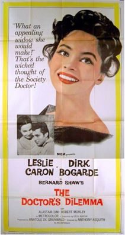

The Doctor's Dilemma
Starring: Leslie Caron, Dirk Bogarde, Alastair Sim
Director: Anthony Asquith
Writer: Anatole de Grunwald
Producer: Anatole de Grunwald
The Doctor's Dilemma is a 1958 British comedy-drama film directed by Anthony Asquith and starring Leslie Caron, Dirk Bogarde, Alastair Sim, and Robert Morley. It was written by Anatole de Grunwald based on the 1906 play The Doctor's Dilemma by George Bernard Shaw.
Trivia
- Gabriel Pascal announced in 1946 he would make the film for Alexander Korda and starring Deborah Kerr.
- Anatole de Grunwald and Anthony Asquith had been developing a film about T. E. Lawrence to star Dirk Bogarde, but it was cancelled at the last minute.
- In the opening scene, there are two historical errors: Felix Aylmer is seen walking towards the Harley Street of Edwardian days; yet, on a distant wall behind him is a commemorative blue plaque; as he turns into the street, a George the VI letter box awaits him.
Previous Showings
2 Runs • 0 Festivals
All runs on record (2):
- October 17 - 18, 1991w/ The Devil's Disciple
- January 22 - 26, 1996w/ The L-Shaped Room